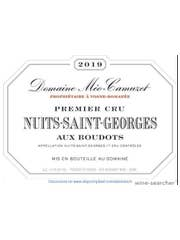
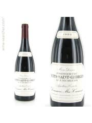
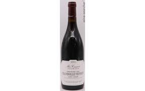

Featured Wines

Domaine Méo-Camuzet
2005 Nuits-Saint-Georges 1er Cru Aux Boudots
Situated on the upper slopes of Nuits-Saint-Georges, Aux Boudots benefits from deep, marl-limestone soils and optimal southern exposure. The 2005 vintage exhibits remarkable concentration, balancing dark fruit savoriness with structured tannins and vibrant acidity.
Aroma Profile:
Black cherry, nutmeg, cocoa powder, roses, vanilla, woodsmoke
Palate:
Medium-full, deep and intense, sappy core, bright acids, great length and grip
Service: Gentle decant 30 minutes prior to serving; serve at 15–18°C.

Domaine Méo-Camuzet
2005 Vosne-Romanée 1er Cru Les Chaumes
Les Chaumes occupies a premier cru site in Vosne-Romanée characterized by its iron-rich limestone and clay soils. The 2005 demonstrates formidable density and tannic backbone, requiring extended aeration to reveal its intricate lattice of dark fruit, savory notes, and mineral depth.
Aroma Profile:
Black fruits, game, cassis, elderberry, beet root, salty stony minerality, savory soy and meat juice
Palate:
Firm but ripe, rich in mouth, striking length, will become silky with age
Service: Decant 1 hour before serving; serve at 15–18°C.

Domaine Méo-Camuzet
2005 Nuits-Saint-Georges 1er Cru Aux Murgers
Located on the thinner, limestone-rich soils of Nuits-Saint-Georges' upper slope, Aux Murgers produces wines of notable finesse and minerality. The 2005 exhibits the maison's signature silky texture, framed by crisp acidity and a precise, cool finish.
Aroma Profile:
Dark berry fruit, classic Meo silky texture, crisp acidity, mineral-inflection
Palate:
Taut and energetic, long cool finish, well-integrated balance
Service: Gentle decant 30 minutes; serve at 15–18°C.

Domaine de Montille
2005 Corton Grand Cru Clos du Roi
As a monopole within the Corton Grand Cru hill, Clos du Roi enjoys a unique microclimate and shallow, limestone-rich soils. The 2005 presents an elegant synthesis of floral red fruit, supple tannins, and lingering finish—hallmarks of the hill's southwestern sector.
Aroma Profile:
Flora, violet, red cherry, mushroom, strawberry
Palate:
Medium+ acidity, medium tannin, outstanding quality, long finish
Service: Decant 45 minutes; serve at 16–18°C.

Domaine Henri Gouges
2005 Nuits-Saint-Georges 1er Cru Les Chaignots
Les Chaignots, a historic premier cru in Nuits-Saint-Georges, is noted for its clay-limestone soils and proximity to the Vosne-Romanée border. The 2005 delivers a firm, structured profile with savory, farmyard nuances and excellent aging potential.
Aroma Profile:
Farmy nose, positive fruit, built structure
Palate:
Full red colour, good fruit that built and built, excellent with cheeseboard
Service: Decant 1 hour; serve at 15–18°C.

Domenico Clerico
2005 Barolo Ciabot Mentin Ginestra DOCG
Ginestra, a premier cru within Monforte d'Alba, features a southeastern exposure and marl-rich calcareous clay soils. The 2005 displays opulent dark fruit, floral lift, and impeccable balance between powerful tannins and vibrant acidity—a benchmark expression of the site.
Aroma Profile:
Dark plums, full bloom red rose, spices, sweet spices, menthol, violets, dark fruit
Palate:
Great acidity, medium tannins, ruby/purple color, endless layers of sweet spices
Service: Decant 2–3 hours; serve at 16–18°C.